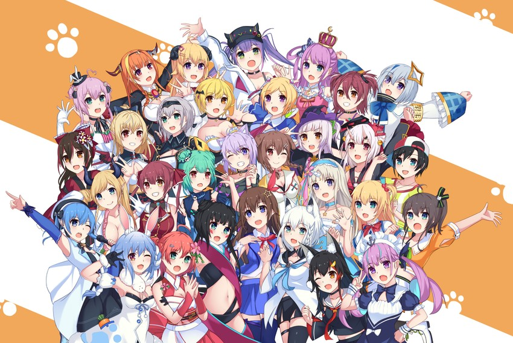
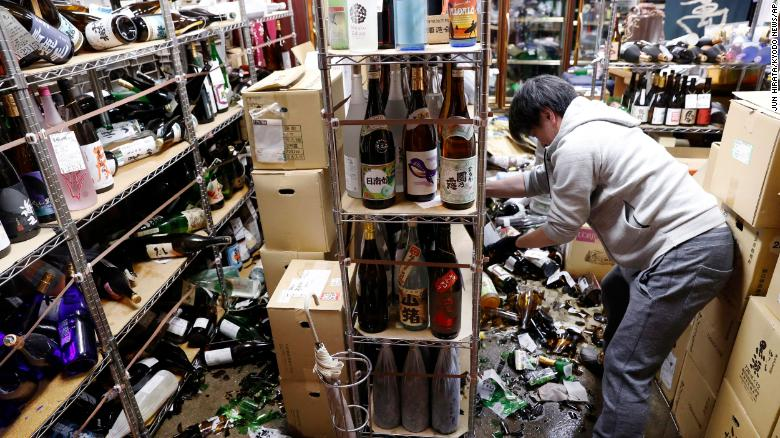
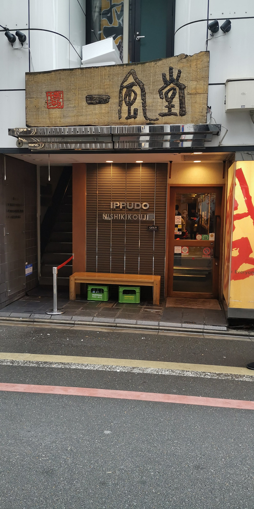
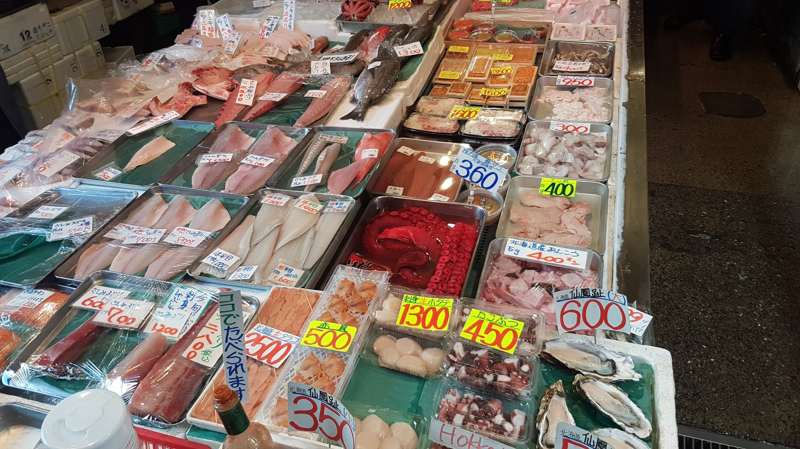
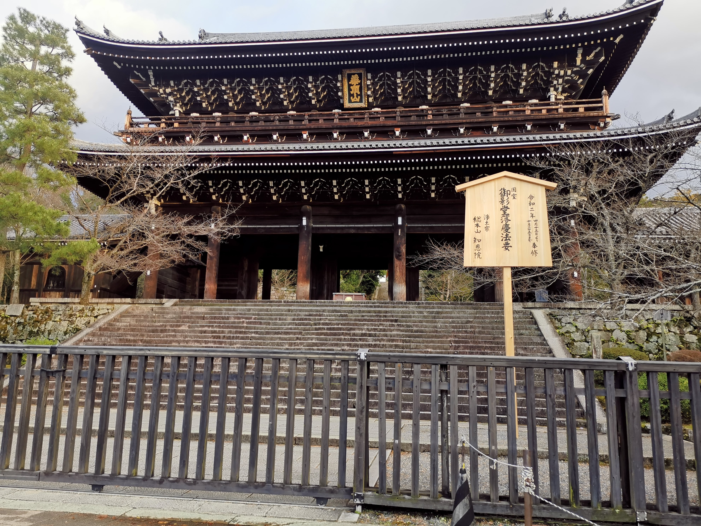
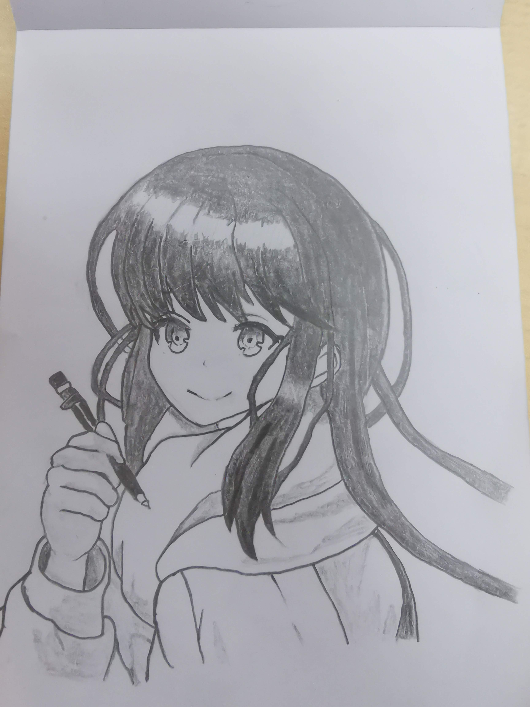

Trends And News
Top News |
Virtual idols on the rise in the Japanese idol industry
|
|

|
Before the year 2020, it would be a stretch to say many people know or understand the term virtual youtubers. At the very most, people would have heard of Hatsune Miku, a virtual diva or Kizuna Ai, one of the first virtual youtubers to reach the spotlight. It is only up until recently that the term gained traction and began gathering the attention of global audiences on the internet. This exponential growth could be partially owed to the ongoing pandemic known as COVID-19. The image shown on the left depicts a virtual idol talent group named Hololive, one of the most successful internationally-known virtual group. Hololive is a sub-branch of the main company COVER, that was originally just a technological company that mainly develops VR and augmented-reality software. Members of the idol branch are supported with equipments, a live2D model and a studio for streaming purposes.
|
Trending in Japan

Demon Slayer now 2nd biggest grossing film in Japan |

A collection of mini gundam figures |
A myriad of games to be announced |

A new pokemon centre set to open soon |
|

Japan 7.1 magnitude earthquake hit Tohoku area |

New ippudo branch open in nishikikouji 2021 |

Oil-spills near Japanese shores causing supply of seafood to decline |

Japanese shrine in Arashiyama, Kyoto closed due to drop in tourist visitation |
Here are the works of our talented members!
